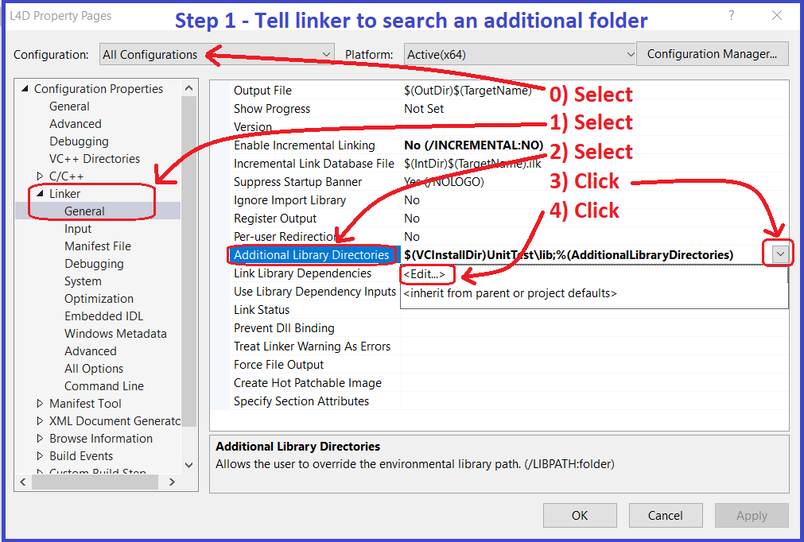
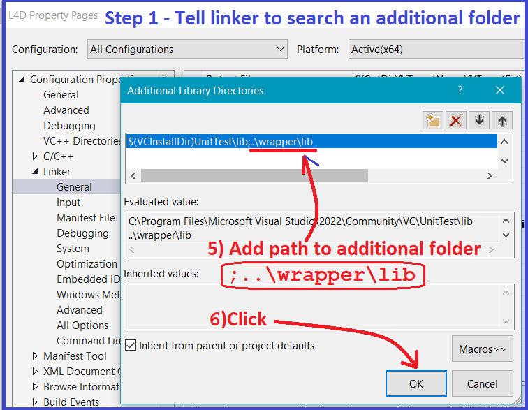
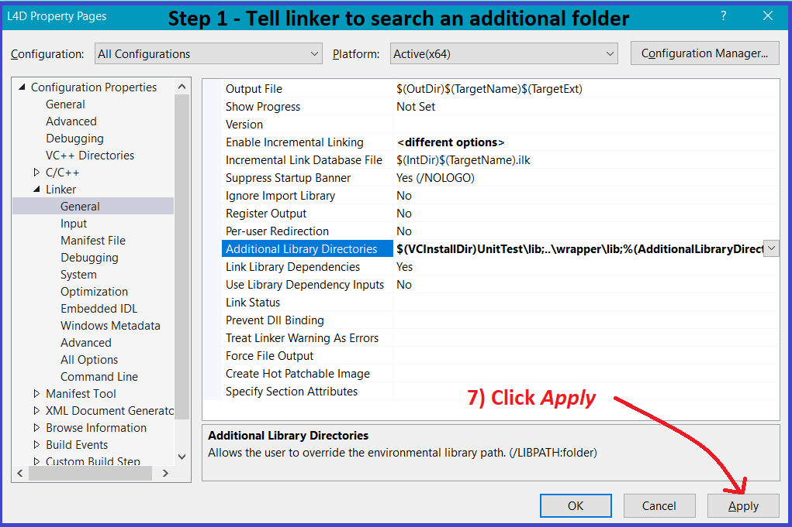
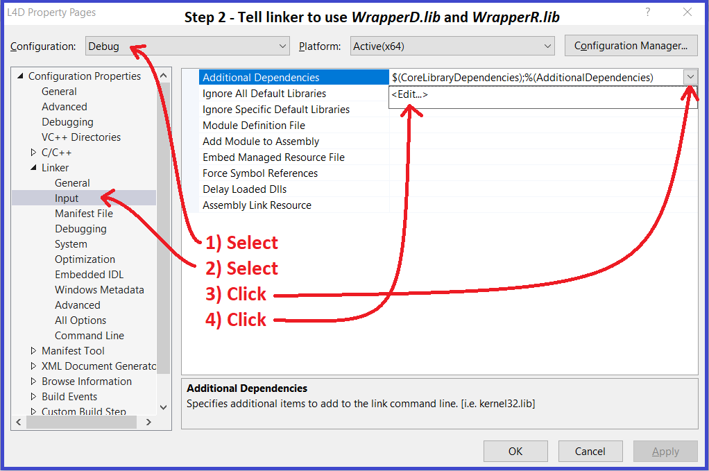
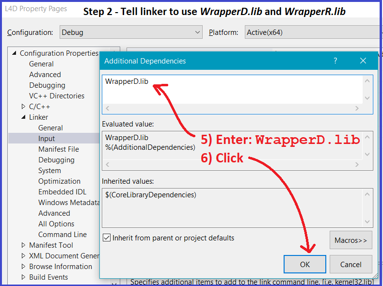
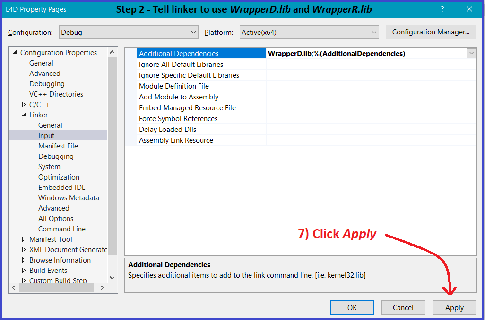
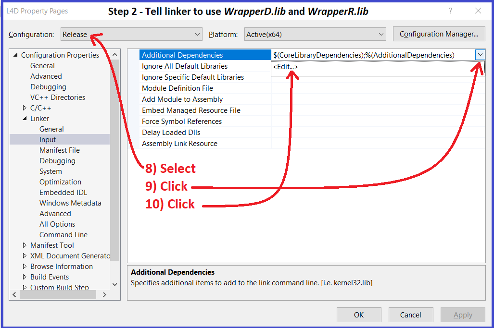
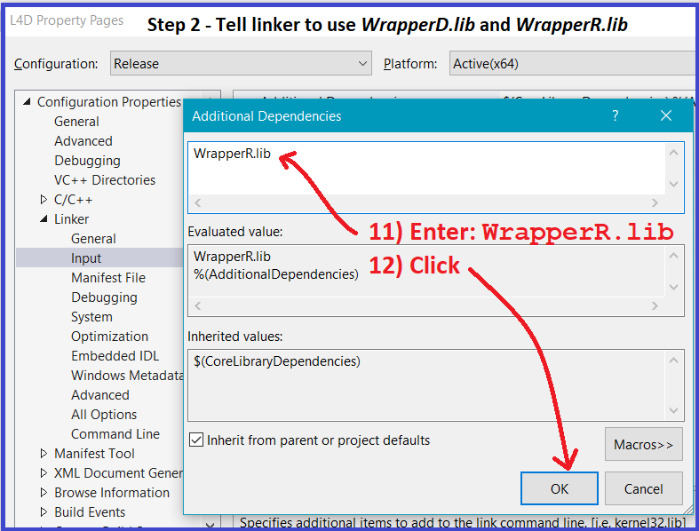
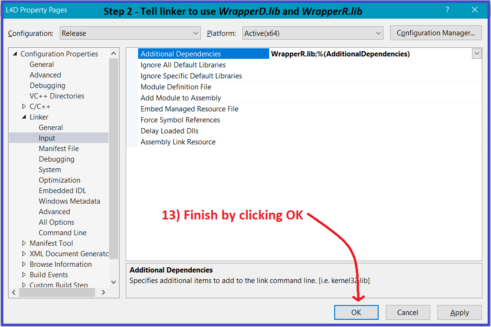

There are two steps required when changing the project's settings to link to the WrapperD.lib and WrapperR.lib:
From the Property Pages dialog do the following 7 steps shown in the next 3 screenshots:


Continue working in the Property Pages dialog and do the following 13 steps shown in the next 6 screenshots:




